Algo Components / computational tasks¶
Specific CEN AlgoComponents.
components.py¶
Abstract algo components classes for multiprocessing simulations with an external parallelisation (i.e not MPI). The parallelization is typically over the simulation members or independent sub-periods. All processes share the same executable (if any) but at least partially different IO environments or script arguments.
These algo components rely on the taylorism package. The main process (the Boss) acts as a task scheduler to to allocate tasks to a set of independent processes (the Workers) working simultaneously.
Two abstract “Boss” classes are defined here are:
_CenParaBlindRun: to launch an executable multiple times in parallel
_CenTaylorRun: to launch a piece of Python code in parallel on several processes
A third abstract “Boss” class is available in the main vortex-nwp package:
ParaExpresso: to launch a script multiple times in parallel
These abstract classes provide high-level tools such as the identification of the list of workers through the list of sub-directories (via the “role” of the main input resource varying from one simulation to another).
Each “Boss” is associated to a “Worker”, providing the instructions for each individual task / process. Each “Worker” works in its specific sub-directory, which must be filled with the appropriate IOs (when fetching the inputs at the “Task” level). Some IOs can be shared by several or all workers. These IOs must be stored in the main working directory, and a link to these files can be created in the Worker’s working directory by the Worker itself.
Two abstract “Worker” classes are defined here are:
_CenWorkerBlindRun: launch an executable without MPI parallelization
_CenTaylorVortexWorker: launch a piece of Python code
A third abstract “Worker” class is available in the main vortex-nwp package:
VortexWorkerBlindRun: to launch a script multiple times in parallel
Here is the full inheritance diagram of the available meta classes :
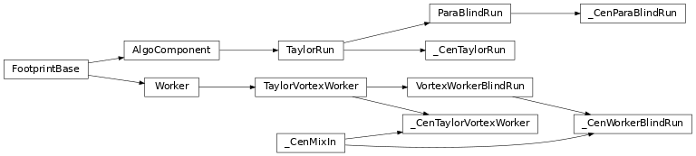
- class vortex_cen.algo.components._CenParaBlindRun(*kargs, **kwargs)[source]¶
Bases:
ParaBlindRunThis abstract algo component defines common methods for simulations based on an executable without MPI parallelization. The parallelization is typically over the simulation members or independent sub-periods, and all processes share the same executable but different IO environments.
- class vortex_cen.algo.components._CenTaylorRun(*kargs, **kwargs)[source]¶
Bases:
TaylorRunTaylorRun derived algo components are not (necessarily) associated to an executable and can simply launch a piece of python code.
- class vortex_cen.algo.components._CenWorkerBlindRun(*args, **kwargs)[source]¶
Bases:
_CenMixIn,VortexWorkerBlindRunThis abstract worker is designed to drive the launch of any script or executable without MPI parallelization (deterministic or ensemble-like simulations) in association with an Algo Component inheriting from an
_CenParaBlindRunorParaExpressoAlgo Component.A single worker is thus a deterministic execution of a given binary or script with a specific IO environment and/or a specific set of argument.
- class vortex_cen.algo.components._CenTaylorVortexWorker(*args, **kwargs)[source]¶
Bases:
_CenMixIn,TaylorVortexWorkerThis abstract worker is designed to drive the launch a python program. The parallelisation is typically over the simulation members or independent sub-periods.
A single worker is thus a deterministic execution of a list of python commands in a specific environment that can be run in parallel with other workers.
forcing.py¶
Algo Components for the generation or the modification of FORCING files.
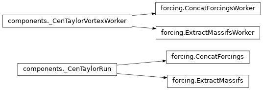
- class vortex_cen.algo.forcing.ExtractMassifs(*kargs, **kwargs)[source]¶
Bases:
_CenTaylorRunAlgo component to extract a list of points from a set of S2M FORCING files in the “massif” geometry.
- class vortex_cen.algo.forcing.ExtractMassifsWorker(*args, **kwargs)[source]¶
Bases:
_CenTaylorVortexWorkerWorker to extract a list of points from a given S2M FORCING file in the “massif” geometry.
- class vortex_cen.algo.forcing.ConcatForcings(*kargs, **kwargs)[source]¶
Bases:
_CenTaylorRunConcatenation of a set of FORCING files into a single forcing.
- class vortex_cen.algo.forcing.ConcatForcingsWorker(*args, **kwargs)[source]¶
Bases:
_CenTaylorVortexWorkerConcatenation of a set of FORCING files into a single forcing.
ensemble.py¶
Algo Components for ensemble Surfex simulations.
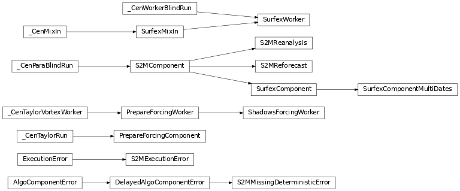
- class vortex_cen.algo.ensemble.S2MComponent(*kargs, **kwargs)[source]¶
Bases:
_CenParaBlindRunThis Algo Component is designed to manage any Surfex execution without MPI parallelization (deterministic or ensemble-like simulations).
Ensemble-like simulations include real ensemble simulations (many executions of the same simulation with different initial conditions or configurations) and multi-year simulations (associating each year to one member) that can run in parallel.
The different members of an ensemble simulation are identified by an input resource that differ between the members (defined by the method role_ref_namebuilder that can be overloaded). For each identified member, a worker object (whose class inherits from
_CenWorkerBlindRun) is generated and the different workers run in parallel.The
S2MComponentclass (that relies on thetaylorismpackage):allocates the different executions of the same binary to workers
analyses their feedbacks to look for execution errors (thanks to the inherited
_default_post_execute()method): should the rc entry of the dictionary returned by the worker’s_CenWorkerBlindRun.vortex_task()method be an Exception, it is captured and stored.
When the execution of all members finishes, the captured exceptions (see above) are wrapped in a
DelayedAlgoComponentErrorexception that is ultimately raised.Consequently, we can rely on that to:
filter/ignore some errors,
send notifications…
For CEN R&D needs, this can be easily implemented in the Task classes provided they inherit from the
vortex_cen.layout.nodes.CENTaskMixInmixin. For example:To filter execution errors, just define
filter_execution_errorin your Task class:filter_execution_error = CENTaskMixIn.s2moper_filter_execution_errorTo send notification emails about fatal and non-fatal errors:
report_execution_warning = CENTaskMixIn.s2moper_report_execution_warningandreport_execution_errors = CENTaskMixIn.s2moper_report_execution_errors
- class vortex_cen.algo.ensemble.SurfexComponent(*kargs, **kwargs)[source]¶
Bases:
S2MComponentAlgoComponent that runs several SURFEX executions in parallel.
- class vortex_cen.algo.ensemble.SurfexComponentMultiDates(*kargs, **kwargs)[source]¶
Bases:
SurfexComponentAlgoComponent that runs several SURFEX in parallel (including several dates for reforecasts).
- class vortex_cen.algo.ensemble.SurfexWorker(*args, **kwargs)[source]¶
Bases:
_CenWorkerBlindRun,SurfexMixInThis algo component is designed to run a SURFEX experiment without MPI parallelization.
- class vortex_cen.algo.ensemble.PrepareForcingComponent(*kargs, **kwargs)[source]¶
Bases:
_CenTaylorRunAlgoComponent that prepares several forcing files in parallel (changes of geometry).
- class vortex_cen.algo.ensemble.PrepareForcingWorker(*args, **kwargs)[source]¶
Bases:
_CenTaylorVortexWorkerThis algo component is designed to prepare a SURFEX Forcing file (change of geometry).
- class vortex_cen.algo.ensemble.S2MReanalysis(*kargs, **kwargs)[source]¶
Bases:
S2MComponentAlgoComponent that runs several SAFRAN reanalyses in parallel.
- class vortex_cen.algo.ensemble.S2MReforecast(*kargs, **kwargs)[source]¶
Bases:
S2MComponentAlgoComponent that runs several SAFRAN reforecasts in parallel.
- class vortex_cen.algo.ensemble.ShadowsForcingWorker(*args, **kwargs)[source]¶
Bases:
PrepareForcingWorkerIt only applies shadows to a forcing file without any change of geometry (worker for 1 member).
deterministic.py¶
Algo Components for deterministic Surfex simulations.
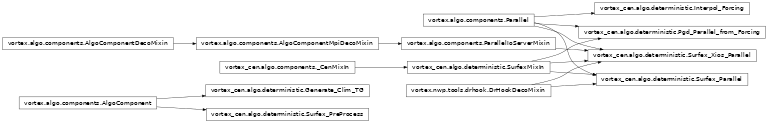
- class vortex_cen.algo.deterministic.Surfex_PreProcess(*args, **kw)[source]¶
Bases:
AlgoComponentAlgo component to apply the required preprocessing before a SURFEX run (e.g. namelists adjustements) WARNING : this algo should now be used only in the operationnal S2M chain
- class vortex_cen.algo.deterministic.Generate_Clim_TG(*args, **kw)[source]¶
Bases:
AlgoComponentAlgocomponent that generates a file of initial temperature to initialize the soil from surfex meteorological forcing files
- class vortex_cen.algo.deterministic.Pgd_Parallel_from_Forcing(*args, **kw)[source]¶
Bases:
Parallel,SurfexMixInThis algo component is designed to run PGD with MPI parallelization and using a FORCING.nc as input for topography.
- class vortex_cen.algo.deterministic.Surfex_Parallel(*args, **kwargs)[source]¶
Bases:
Parallel,DrHookDecoMixin,SurfexMixInThis algo component is designed to run SURFEX experiments over large domains with MPI parallelization.
assim.py¶
Algo Components for the exectution of SODA-related tasks within a snow data assimilation workflow.
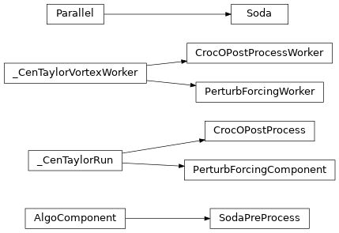
- class vortex_cen.algo.assim.Soda(*args, **kw)[source]¶
Bases:
Parallelworker for a SODA run (designed for Particle filtering for snow) @author: B. Cluzet 2018-05-24
- class vortex_cen.algo.assim.SodaPreProcess(*args, **kw)[source]¶
Bases:
AlgoComponentPrepare SODA namelist according to configuration file WARNING : this algo should not be used anymore (the preprocessing of the namelist is now done in the Soda algo). It is here only for retro-compatibility.
- class vortex_cen.algo.assim.PerturbForcingComponent(*kargs, **kwargs)[source]¶
Bases:
_CenTaylorRunAlgo compent that creates an ensemble of forcing files by stochastic perturbations of a time series of deterministic input forcing files. Each worker deals with one single FORCING file as input (parallelisation over the different sub-periods) and one single FORCING file as output (parallelisation over the ensemble members).
- class vortex_cen.algo.assim.PerturbForcingWorker(*args, **kwargs)[source]¶
Bases:
_CenTaylorVortexWorkerWorker that applies stochastic perturbations to a FORCING file.
- class vortex_cen.algo.assim.CrocOPostProcess(*kargs, **kwargs)[source]¶
Bases:
_CenTaylorRunNot documented yet.
- class vortex_cen.algo.assim.CrocOPostProcessWorker(*args, **kwargs)[source]¶
Bases:
_CenTaylorVortexWorkerWorker associated to the SodaPostProcess algo component. Each worker concatenate the different PRO files covering the subperiods between assimilation dates generated by the crocO task into a single PRO file covering the period datebegin –> dateend
scores.py¶
Algo components for ESCROC scores.
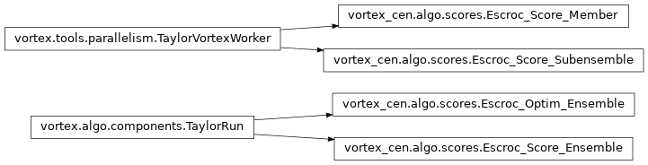
- class vortex_cen.algo.scores.Escroc_Score_Member(*args, **kwargs)[source]¶
Bases:
TaylorVortexWorkerAlgoComponent worker designed to run one member of SURFEX-Crocus experiment without MPI parallelization.
- class vortex_cen.algo.scores.Escroc_Score_Ensemble(*kargs, **kwargs)[source]¶
Bases:
TaylorRunAlgoComponent that compute ESCROC scores for the full ensemble.
postprocessing.py¶
Algo Components for S2M post processing.
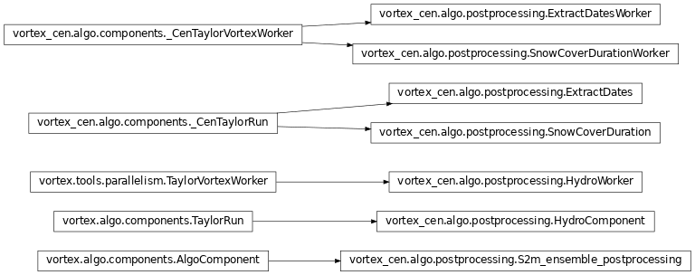
- class vortex_cen.algo.postprocessing.S2m_ensemble_postprocessing(*args, **kw)[source]¶
Bases:
AlgoComponentS2M ensemble forecast postprocessing.
Current use : Get ensemble deciles of “fresh snow” (12-hourly and daily accumulation for the Bulletin 4 saisons)
- class vortex_cen.algo.postprocessing.HydroWorker(*args, **kwargs)[source]¶
Bases:
TaylorVortexWorkerAlgo that computes hydrological aggregated diagnostics after a surfex run for 1 member
- class vortex_cen.algo.postprocessing.HydroComponent(*kargs, **kwargs)[source]¶
Bases:
TaylorRunAlgo that computes hydrological aggregated diagnostics after a surfex run for an ensemble
- class vortex_cen.algo.postprocessing.ExtractDates(*kargs, **kwargs)[source]¶
Bases:
_CenTaylorRunNot documented yet.
- class vortex_cen.algo.postprocessing.ExtractDatesWorker(*args, **kwargs)[source]¶
Bases:
_CenTaylorVortexWorker
- class vortex_cen.algo.postprocessing.SnowCoverDuration(*kargs, **kwargs)[source]¶
Bases:
_CenTaylorRunNot documented yet.
- class vortex_cen.algo.postprocessing.SnowCoverDurationWorker(*args, **kwargs)[source]¶
Bases:
_CenTaylorVortexWorkerWorker associated to the SnowCoverDuration algo component and calling various snowtools methods to compute snow cover duration diagnostics of SURFEX-Crocus simulations : * SMOD (Snow Melt Out Date) * SCD (Snow Cover Duration) * SOD (Snow onset date) * SD (Total number of days with snow)
obs.py¶
Algo Components for the manipulation of any observation data.
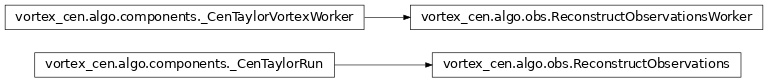
- class vortex_cen.algo.obs.ReconstructObservations(*kargs, **kwargs)[source]¶
Bases:
_CenTaylorRunGenerate an ensemble of ReconstructObservationsWorker
- class vortex_cen.algo.obs.ReconstructObservationsWorker(*args, **kwargs)[source]¶
Bases:
_CenTaylorVortexWorkerUpdate SAFRAN-ready observation files (R*, S* and T* files) with reconstructed hourly temperature observations.
prep.py¶
Algo component to launch the SURFEX PREP executable.
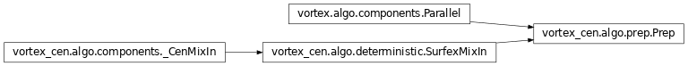
safran.py¶
SAFRAN related algo Components.
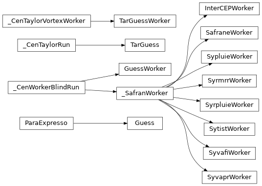
prosnow.py¶
Algo Components for the PROSNOW project
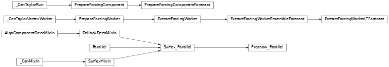
- class vortex_cen.algo.prosnow.PrepareForcingComponentForecast(*kargs, **kwargs)[source]¶
Bases:
PrepareForcingComponentIt adapts forcing files to a ski resort geometry (several members in parallel).
This class was implemented by C. Carmagnola in May 2019 (PROSNOW project).
- class vortex_cen.algo.prosnow.ExtractForcingWorker(*args, **kwargs)[source]¶
Bases:
PrepareForcingWorkerIt adapts forcing files to a ski resort geometry (worker for 1 member).
This class was implemented by C. Carmagnola in May 2019 (PROSNOW project).
- class vortex_cen.algo.prosnow.ExtractForcingWorkerEnsembleForecast(*args, **kwargs)[source]¶
Bases:
ExtractForcingWorkerIt adapts forcing files to a ski resort geometry (worker for 1 member) with specific adaptations for short term forecast
This class was implemented by C. Carmagnola in May 2019 (PROSNOW project).
- class vortex_cen.algo.prosnow.ExtractForcingWorkerLTForecast(*args, **kwargs)[source]¶
Bases:
ExtractForcingWorkerEnsembleForecastIt adapts forcing files to a ski resort geometry (worker for 1 member) with specific adaptations for seasonal forecasts
This class was implemented by C. Carmagnola in May 2019 (PROSNOW project).
- class vortex_cen.algo.prosnow.Prosnow_Parallel(*args, **kwargs)[source]¶
Bases:
Surfex_ParallelIt adds snow management specificities by ski resorts to standard SURFEX-Crocus algo components.
This class was implemented by C. Carmagnola in April 2019 (PROSNOW project).